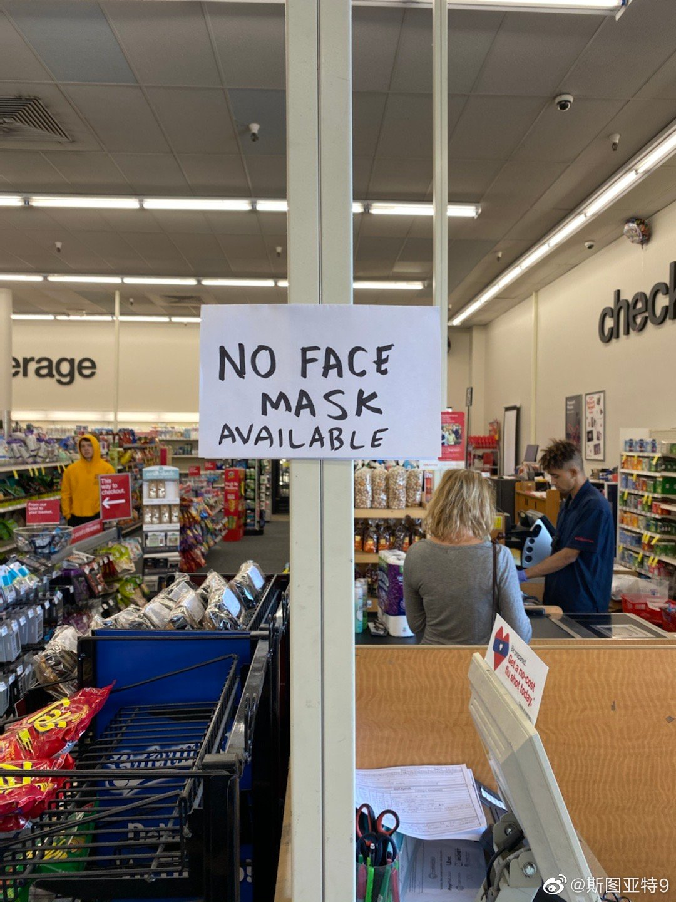

今天早上下车上听广播讲新冠病毒 网页链接 里面专家说，即使是最乐观的神速，疫苗也要1-2年才可能出来。里面还非常坦诚地说，现在全球口罩短缺，不可能保证每个人都有口罩戴。口罩供应会优先医护工作者。只有保证他们的健康，他们才可以保护公众的健康。同时重复WHO和所有西方权威机构说的话：研究显示健康人戴口罩没有明显的效果，得病的人戴口罩会有一些效果。有听众问为什么不对每个感染在家的人做检测，回答说现在检测资源非常短缺，必须非多级别处理。
昨天CDC作出严厉的声明。我今天好奇去CVS网站上查了一下，发现这么贵的口罩也卖光了……@斯图亚特9:今天在CVS结账时候偶然看到收款台旁边有口罩卖。虽然巨贵但是依然一时冲动买了两盒。之后觉得很后悔。一来太贵了（分别合一个口罩1.6美元和90美分），二来觉得这样占了本来更需要的人的资源，不合适。（btw, 在美国没有口罩心理恐慌的，可以去CVS买这种巨贵的口罩，好像很多分店都有） 
//@喀嚓克:很多中国友人谈论少数民族问题时，特别喜欢用“畏威而不怀德”这句话。认为跟少数民族讲道理会被对方利用你的讲理而占你的便宜，反而“歧视”到位了，对方会表现的更乖巧。俄罗斯在对待中国人时，显然深谙此道，以至于俄中关系多年来都呈现出如此“父慈子孝”的温馨面貌。@凤凰卫视吕宁思:#总编摘要# 就当地出现的针对华人进行某些过度检查举动，中国驻俄罗斯大使馆向莫斯科市政府递交照会指出：类似现象在美国和其它西方国家都是没有的。中方理解抗疫情措施的必要性，但考虑中俄高度友好关系，希望市政府采取《适度和非歧视性》的措施。